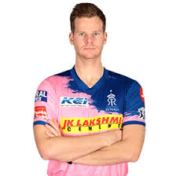

RAJASTHAN ROYALS
The Rajasthan Royals (often abbreviated as RR) are a franchise cricket team based in Jaipur, Rajasthan, that
plays in the Indian Premier League (IPL). Founded in 2008 as one of the initial eight IPL franchises, the
team is based at the Sawai Mansingh Stadium in Jaipur.
The Rajasthan Royals are sometimes considered as the "moneyball" team of the IPL.The Royals are
known to unearth obscure, high potential talent, as well as their involvement in a number of
controversies and scandals.
The team won the inaugural edition of the IPL under the captaincy of Shane Warne, despite being written off
as a title contender by the media and fans. The Royals were also the runners-up of the 2013 Champions League
Twenty20 under Rahul Dravid's captaincy.
On 14 July 2015, the verdict reached by a panel appointed by the Supreme Court of India suspended Rajasthan
Royals and Chennai Super Kings for two years over a 2013 betting scandal, meaning they could not participate
in both the 2016 and 2017 IPL tournaments. They returned to the competition for the 2018 season.
The team's record run-scorer is Ajinkya Rahane with 2705 runs, while the leading wicket-taker is Shane
Watson, with 67.
CAPTAIN

Steven Peter Devereux Smith (born 2 June 1989) is an Australian international cricketer and former captain
of the Australian national team. Smith is consistently rated as one of the top-ranked Test batsmen in the
world, according to the ICC Player Rankings. Smith has been called the "best since Bradman" due to his
distinctively high Test batting average. He plays for New South Wales and Sydney Sixers in domestic
cricket. He is the captain of Rajasthan Royals in the IPL.
On 28 March 2018, after being banned by Cricket Australia for his involvement in a ball tampering incident,
Smith's player contract with the Royals was terminated by the Board of Control for Cricket in India as Steve
Smith and fellow Australian batsman David Warner were banned from playing for their respective teams for the
upcoming 2018 IPL edition.
In November 2018, Smith was retained by Rajasthan Royals for the 2019 Indian Premier League.
After losing six out of first eight matches of the season, Smith was appointed as the captain of the
Rajasthan Royals by replacing Ajinkya Rahane.In the tournament, he scored 319 runs at an average of
39.87, including three fifties.